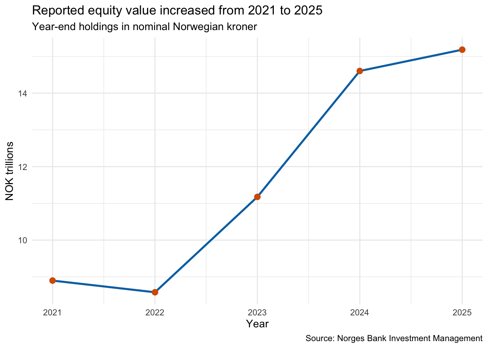
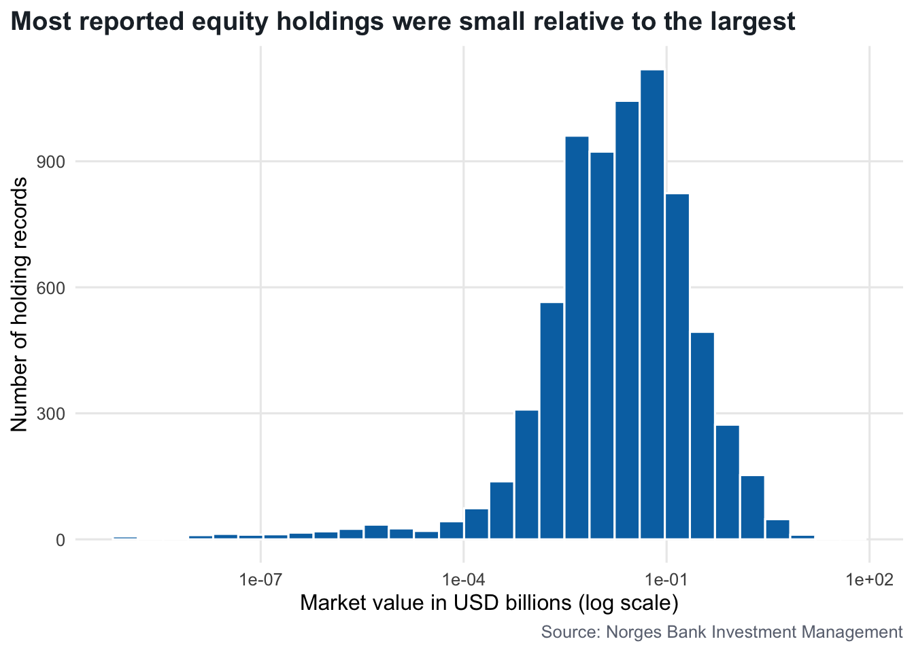

library(tidyverse)
gpfg <- read_csv("data/gpfg.csv") |>
mutate(market_value_usd_billions = market_value_usd / 1000000000)8 Visualize One Variable
Part 4: Data Visualization
A chart should begin with a question. We will first describe one column, then combine columns to visualize comparisons, relationships, and change. The final chapter in this part introduces geographic questions and maps.
8.1 Learning objectives
By the end of this chapter, you should be able to:
- identify whether a variable is categorical or numeric;
- explain the basic parts of a
ggplot2chart; - count categories with a bar chart;
- examine a numeric distribution with a histogram and box plot; and
- recognize unusual values and strongly skewed distributions.
8.2 Begin with one column
Describing one column is the simplest place to begin visual analysis. The question depends on the kind of variable:
| Variable | Possible question | Useful chart |
|---|---|---|
| Categorical | How many holding records belong to each industry? | Bar chart |
| Numeric | How are holding values distributed? | Histogram |
| Numeric | What are the middle, spread, and unusual values? | Box plot |
Continue in the same project
Open djr.Rproj and create 06-one-variable-visualization.Rmd. Reuse data/gpfg.csv.
8.3 Build a chart with ggplot2
ggplot2 is the tidyverse package for visualization. A basic chart has three parts:
- the data;
- an aesthetic mapping created with
aes(); and - a geometry that determines what is drawn.
ggplot() starts the chart. aes() identifies the column to display. geom_bar() counts the rows in each category and draws the bars:
ggplot(gpfg, aes(y = industry)) +
geom_bar()
This is a complete chart. Beginners need only the data, the mapping, and the geometry. The gray background, bar color, spacing, and axes are ggplot2 defaults; we do not need to control them before seeing whether the chart answers the question.
The chart answers: “How many holding records belong to each industry?” It does not show the number of unique companies or the total market value.
8.4 Order a categorical bar chart
Alphabetical order is useful for finding a name. Ordering by frequency makes a ranking easier to see. fct_infreq() orders categories by how often they appear:
ggplot(gpfg, aes(y = fct_infreq(industry))) +
geom_bar()
The bars are horizontal because the category is mapped to the y-axis. This gives long industry names more room.
8.5 Improve the same chart with layers
Once the basic chart works, add only the layers that help a reader understand it. The following version keeps the same data and calculation while adding color, labels, and a cleaner theme:
ggplot(gpfg, aes(y = fct_infreq(industry))) +
geom_bar(fill = "#0072B2", width = 0.75) +
labs(
title = "Industrials appeared most often in the year-end holdings file",
x = "Number of holding records",
y = NULL,
caption = "Source: Norges Bank Investment Management"
) +
theme_minimal(base_size = 12) +
theme(
panel.grid.major.y = element_blank(),
panel.grid.minor = element_blank(),
plot.title = element_text(face = "bold", color = "#1F2933"),
plot.caption = element_text(color = "#6B7280"),
plot.title.position = "plot",
plot.caption.position = "plot"
)
The + operator adds each layer to the chart. Here:
fillchanges the bar color andwidthchanges bar thickness;labs()adds a title, axis labels, and source;theme_minimal()changes the overall appearance; andtheme()adjusts a few individual display elements.
None of these appearance controls changes the count. Start with the simple version, confirm the calculation, and then decide which additions improve the communication.
Counting rows is not adding values
geom_bar() counts rows automatically. In the next chapter, we will prepare a summary table and use geom_col() when the question concerns an amount such as total market value.
8.6 Examine a numeric distribution
A distribution describes which values are common, how widely they vary, and whether unusual values are present. A histogram divides a numeric column into ranges called bins and counts the observations in each range:
ggplot(gpfg, aes(x = market_value_usd_billions)) +
geom_histogram(fill = "#0072B2", color = "white") +
theme_minimal(base_size = 12) +
theme(panel.grid.minor = element_blank())
Most holdings are relatively small and a few are very large. This is a right-skewed distribution: the long tail extends toward the larger values.
The default histogram is a starting point. geom_histogram() has optional arguments for controlling the number and width of bins, but those choices can wait until a reporting question requires more detail.
8.7 Make a skewed distribution easier to see
scale_x_log10() changes the spacing of the x-axis so values that differ by large ratios are easier to compare:
ggplot(gpfg, aes(x = market_value_usd_billions)) +
geom_histogram(fill = "#0072B2", color = "white") +
scale_x_log10() +
theme_minimal(base_size = 12) +
theme(panel.grid.minor = element_blank())
The source values have not changed, but the axis spacing has. Always tell readers when an axis uses a log scale.
Check before using a log scale
A log scale cannot display zero or negative values. Check whether those values exist and decide how they should be handled before using the scale.
8.8 Summarize a numeric distribution with a box plot
A box plot gives a compact view of the middle and spread of a numeric column. It also marks values far from the central part of the distribution:
ggplot(gpfg, aes(x = market_value_usd_billions)) +
geom_boxplot(
fill = "#56B4E9",
color = "#1F4E79",
width = 0.35,
outlier.color = "#D55E00"
) +
scale_x_log10() +
theme_minimal(base_size = 12) +
theme(panel.grid.minor = element_blank())
The line inside the box is the median. The box contains the middle half of the values. Points beyond the whiskers deserve inspection, but they are not automatically errors.
8.9 Add clear labels
labs() adds information the reader needs, and theme_minimal() applies a simple visual style:
ggplot(gpfg, aes(x = market_value_usd_billions)) +
geom_histogram(fill = "#0072B2", color = "white") +
scale_x_log10() +
labs(
title = "Most reported equity holdings were small relative to the largest",
x = "Market value in USD billions (log scale)",
y = "Number of holding records",
caption = "Source: Norges Bank Investment Management"
) +
theme_minimal(base_size = 12) +
theme(
panel.grid.minor = element_blank(),
plot.title = element_text(face = "bold", color = "#1F2933"),
plot.caption = element_text(color = "#6B7280"),
plot.title.position = "plot",
plot.caption.position = "plot"
)
The labels name the measure, unit, source, and transformed axis.
A restrained visual style
The charts use a colorblind-aware blue (#0072B2) for the main data and an orange (#D55E00) only when a value needs emphasis. A minimal theme, lighter grid lines, and bold titles create hierarchy without adding decoration. The hexadecimal color codes simply identify exact colors; you can reuse them without memorizing how the codes work.
ggplot2 is a larger universe
The examples in this book teach a small, reusable foundation. ggplot2 can also control scales, legends, annotations, facets, coordinates, fonts, and many other design details. Explore the official Introduction to ggplot2, compare the built-in themes, or consult the online ggplot2 book when a project needs more control. You do not need to learn all of these options at once.
8.10 Questions to ask about a one-variable chart
- What does one bar, bin, or point represent?
- Is the chart counting rows, unique entities, or an amount?
- Are missing, zero, or negative values absent?
- Is the axis transformed?
- Which unusual value needs source checking?
- What can this one column not explain?
8.11 Practice
Using gpfg:
- choose one categorical column and create a bar chart of its row counts;
- choose one numeric column and create a histogram;
- create a box plot of the same numeric column;
- add a title, axis labels, and source; and
- write one visible pattern and one question that requires another column.
8.12 Takeaways
| Function | What it does |
|---|---|
ggplot() |
Starts a chart with data |
aes() |
Maps a column to an axis or another visual feature |
geom_bar() |
Counts rows in each category and draws bars |
fct_infreq() |
Orders categories by frequency |
geom_histogram() |
Shows the distribution of one numeric variable |
geom_boxplot() |
Summarizes the middle, spread, and unusual values |
scale_x_log10() |
Displays a numeric axis on a logarithmic scale |
labs() |
Adds titles, axis labels, and a source caption |
theme_minimal() |
Applies a simple visual theme |
Want more control?
The official ggplot2 reference documents individual functions and their optional arguments. Begin with the simple layers above and add an option only when it helps answer the question.